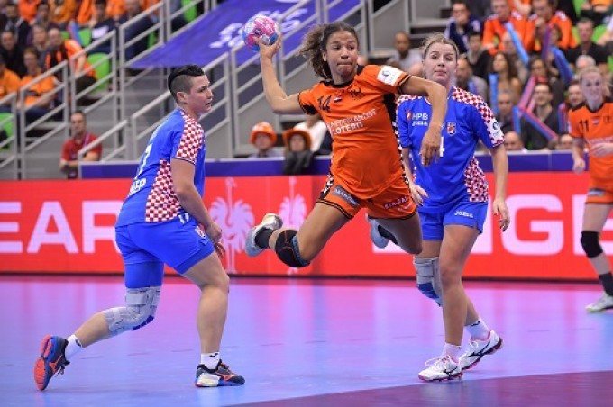

Handbal

Handbal is een sport tussen twee ploegen van elk zeven spelers.
De winnaar is het team dat de meeste doelpunten maakt door de bal in het doel van de tegenstander te werpen.
De kern van het spel, dat zowel door heren als door dames kan worden beoefend,
wordt gevormd door twee belangrijke regels:
de bal mag niet met het onderbeen en de voet worden gespeeld en een speler mag met de bal in de hand maar drie passen doen,
dan moet hij hem op de grond stuiten of afspelen.
Het vrij jonge zaalhandbal heeft het oudere veldhandbal thans flink naar de achtergrond gedrongen.